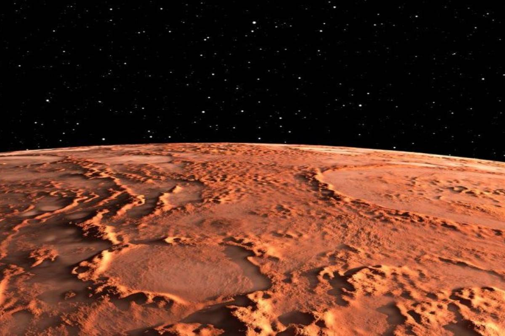

Teoría de vida más allá de la Tierra
La búsqueda de vida extraterrestre se ha convertido en un foco principal de la astrobiología, una disciplina que estudia el potencial de vida en otros planetas y cuerpos celestes. Esta búsqueda incluye la investigación de planetas extrasolares (exoplanetas) que podrían tener condiciones similares a la Tierra.
Métodos de búsqueda:
- SETI (Search for Extraterrestrial Intelligence): Utiliza radiotelescopios para detectar señales de radio inusuales del espacio que podrían ser emitidas por civilizaciones avanzadas.
- Descubrimiento de exoplanetas: Los científicos utilizan telescopios espaciales y terrestres para identificar planetas en zonas habitables de sus estrellas, donde las condiciones podrían ser adecuadas para la vida tal como la conocemos.
- Exploración de Marte y lunas del sistema solar: Las misiones robóticas a Marte, como los rovers de la NASA, y estudios de lunas como Europa de Júpiter y Encélado de Saturno, buscan signos de vida microbiana pasada o presente.
Implicaciones éticas y filosóficas: El descubrimiento de vida extraterrestre podría tener profundas implicaciones para nuestra comprensión del universo y nuestro lugar en él. Además, plantea cuestiones sobre cómo deberíamos interactuar con otras formas de vida inteligente.

| Tipos de búsqueda | Imagen de los tipos |
|---|---|
| Radiotelescopios |  |
| Telescopio |  |
| Marte |  |